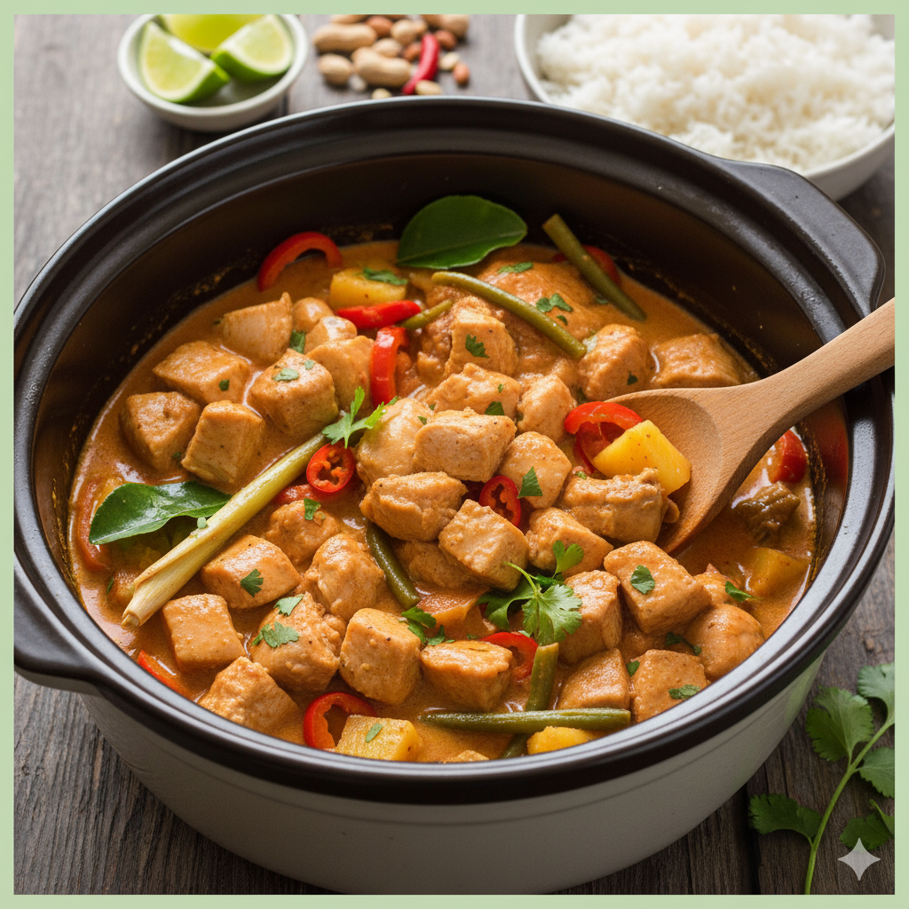

Home
Slow-Cooker Thai Chicken

Description
This Thai chicken stew is a family favorite.
Easy to make in a crockpot or slowcooker. Serve
with your favorite rice and a nice glas of cold beer.
Ingrediënts
- 3/4 cup hot salsa
- 1/4 cup chunky peanut butter
- 3/4 cup light coconut milk
- 2 tbs lime juice
- 1 tbs soy sauce
- 1 tsp white sugar
- 2 tbs grated ginger
- 2 pounds skinless chicken thighs
- 1/2 cup chopped peanuts, for topping
- 2 tbs chopped cilantro, for topping
Steps
- Combine salsa, peanut butter, coconut milk, lime juice
soy sauce, sugar and ginger in te slowcooker.
- Place chicken thighs in the sauce and coat the chicken in sauce.
- Cover and cook 8-9 hours until tender.
- Garnish with the peanuts and cilantro and serve with rice.